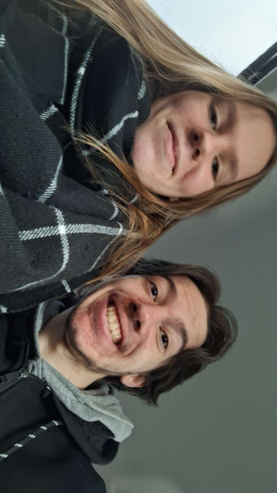
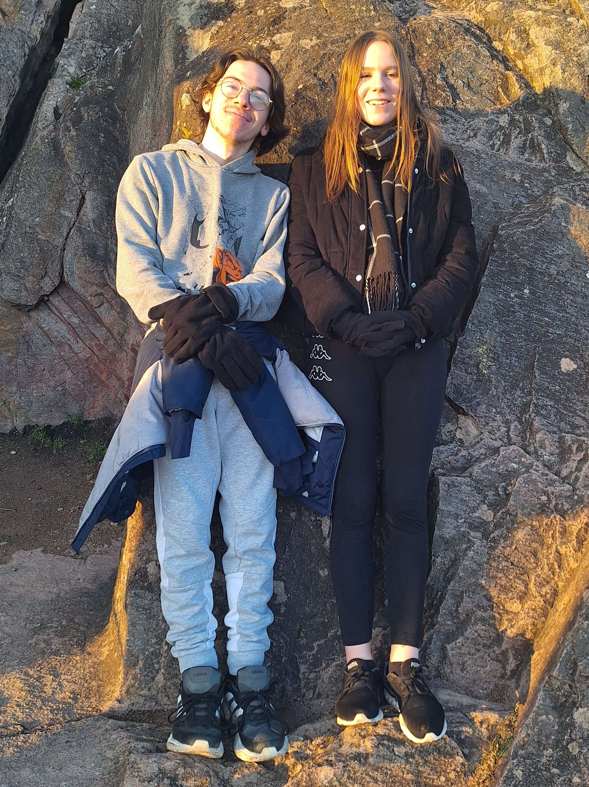
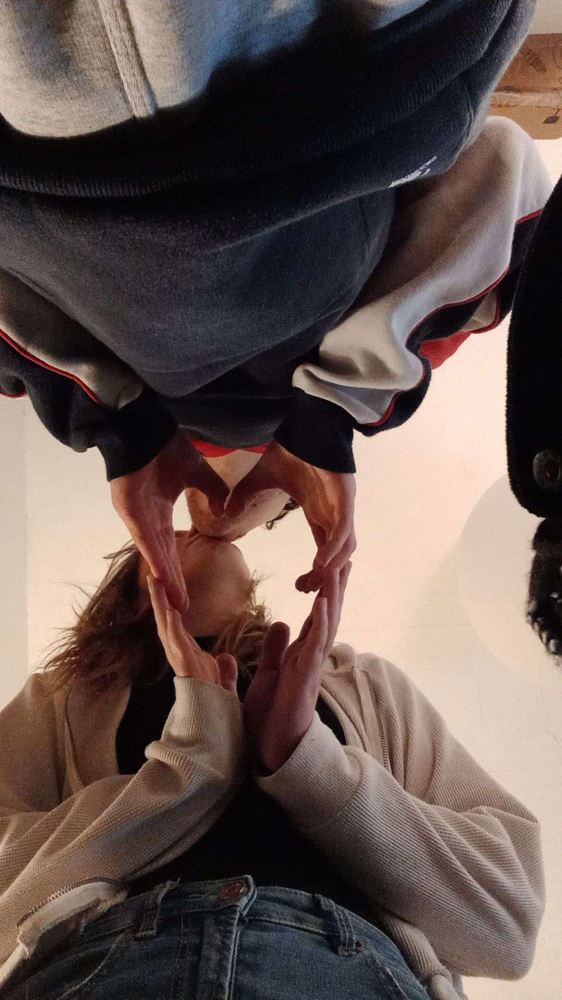

Pour mon ptit ange ❤️
Joyeux 3 ans ma chérie, j'ai voulu t'écrire malgré le fait qu'on ne soit plus ensemble parce que c'est la date de notre belle rencontre et que je voulais la vivre. Je voulais te remercier d'avoir vécu ces trois belles années avec moi.
Je vais commencer par le début, notre jolie rencontre au Jura : à table, il y avait une famille et une fille vraiment magnifique avec un style que j'aimais bien. À ce moment-là, je suis tombé sous ton charme. Je me suis dit que tu étais inaccessible parce que tu es littéralement une déesse et qu'au tout début, je pensais que Quentin, c'était ton mec x). J'ai pas mal flashé sur toi, mais j'ai pas osé venir te voir. Je me rappelle d'un jour où on était en train de manger et là, je te vois arriver et j'ai été stun par ta tenue. Je vois encore l'image dans ma tête. Je me rappelle que j'avais peur de toi aussi. À l'époque, je me disais, et je le dis toujours d'ailleurs, que les belles femmes sont toujours des monstres, sauf que toi, en fait, tu es un vrai ange au cœur d'or. Mais du coup, j'ai toujours essayé de t'esquiver, sauf des fois où je pouvais pas, et mon cœur battait plus vite parce que wow, une déesse passe à côté de moi, c'est quelque chose quand même. Il y a un autre jour, à table, je me rappelle avoir demandé à Floflo si on pouvait changer de place, mais je sais plus vraiment pourquoi. Je crois que c'était pour me cacher de toi, mais au final, c'est toi qui as changé de place x). Tout ça nous mène au fameux « venez si vous voulez jouer au baby-foot ». Haha, quelle phrase légendaire ! Et à partir de là, on commence à se connaître. Je vois une fille magnifique, jolie voix, gentille, douce, qui faisait beaucoup de choses et qui était douée sur tout, beaucoup trop forte aux jeux de société x), et qui jouait à LoL omg. Ça me semblait un peu irréel, ce qu'il se passait, parce que je comprenais pas pourquoi tu t'intéressais à moi, mais au final, le feeling est bien passé. Je rentre chez moi et on parle, on joue et ça se passe super bien, et on décide de se voir, et c'était dingue. Le 30 août, on se met ensemble et c'est le commencement d'une relation magique. On a eu tellement de bons moments et forcément des moins bons. On a passé beaucoup de nuits ensemble, même si c'est pas assez et ça serait jamais assez. J'ai adoré dormir avec toi (même si tu prenais toute la place et la couette ;-;), j'aimais beaucoup quand tu te collais à moi avant de dormir, mais tu chauffes tellement la nuit x). J'adorais quand tu me faisais des papouilles, j'adorerais aussi te faire des massages, même si j'étais pas très bon x). On a passé tellement de temps à rire ensemble et entendre ton rire, quel bonheur. On a fait des plus gros trucs comme les cinés, les BK, du vélo, la sortie au château, et tout était trop bien. Je pense qu'on pourrait faire n'importe quoi et ça serait bien parce que tu es là, tu rends les choses agréables et tant que je suis avec toi, je suis si heureux. On a fait 2 sorties à Europa Park aussi et c'était dingue. Je rêve d'y retourner avec toi un jour, juste tous les 2, ça me plairait vraiment. Chaque journée avec toi, ma chérie, était d'un bonheur, d'une douceur comme le matin d'un printemps. Tu sais, ces fameux matins où dès que tu te réveilles et le soleil est déjà là, mais il est doux, l'air est frais, les jolis papillons sont là, les oiseaux chantent et tout semble magique, comme toi. Les nuits sont silencieuses depuis que tu es partie. J'entends des échos de ta voix, de ton rire, de certains moments où tu me faisais rire, comme les fameux " yeux globuleux ", et la fois où je jouais à Valo où j'ai parlé en anglais et tu m'as imité x) sa c'étais horriblement drôle. Dans ces nuits-là, le silence est aussi bruyant que quand tu étais là. Ça me manque de regarder des séries avec toi, de te regarder jouer à Genshin aussi, de te voir fière de ce que tu faisais au crochet aussi. Et tu te rappelles de Mario Bros ? Ça, c'était incroyable. J'aimerais trop refaire un jeu comme ça avec toi. Enfin bref, j'adorais passer simplement du temps avec toi. Tu étais clairement ma lumière dans tout ce noir. Ton sourire est encore présent dans chaque seconde qui passe, j'ai beau essayer de t'oublier, tu n'es pas de celles que le temps efface. Je découvre un peu de toi dans chacune de mes habitudes, j'ai même repris des tics de langage pour étouffer ma solitude, je te vois dans chaque pensée, dans chaque envie, sur mes oreillers il y a encore un soupçon de ton odeur. Je crois que je ne t'ai jamais vraiment expliqué tout ce que j'aimais chez toi. À mes yeux, tu es d'une beauté divine, ton corps est parfait, digne d'une déesse grecque, ton visage est absolument magnifique et encore plus quand tu souris. J'adorais simplement te regarder, même dans les moments les plus simples. J'aime ta bonne humeur et ton amour. J'étais tout le temps comblé de bonheur et d'amour, je pouvais pas rêver mieux. J'aimais ta douceur, ta façon de prendre soin de moi et toutes ces petites attentions que tu avais. Avec toi, Mathilde, je me sentais aimé. Je suis amoureux de ton rire, je l'aime tellement. J'aimerais l'entendre tous les jours de ma vie. J'aimais quand je réussissais à te faire rire, ou quand on partait tous les deux dans un fou rire pour rien. Ce sont des moments tout simples, mais c'est exactement ce genre de moments que je voudrais garder pour toujours. Je suis sous le charme de la façon dont tu illumines ma vie quand tu es là. Tu as une joie de vivre qui me contamine, et quand tu es à mes côtés, tout me paraît plus léger, plus simple. Même une journée normale pouvait devenir une bonne journée simplement parce que je la passais avec toi. J'aimais être avec toi, même quand on ne faisait rien de particulier. Juste être à tes côtés me suffisait. J'aimais par-dessus tout jouer à des jeux avec toi. Tu rendais ça agréable, parfois drôle, et on s'amusait beaucoup ensemble. De temps en temps, tu étais mauvaise joueuse x) surtout pendant les Codenames, c'était hilarant x), mais ça avait son charme, c'était mignon. On a passé quasiment 3 magnifiques années ensemble, et quand je pense à tout ce qu'on a vécu, je pense aussi à tout ce dont ont rêvais pour la suite. Notre maison, notre Maine Coon, nos enfants, mais surtout passer chaque jour de ma vie à tes côtés. Toi, Mathilde, la femme de ma vie, ma ptite mamie, mon ptit ange, je t'aimais, je t'aime et je t'aimerai. Ne te sens pas obligée de répondre, je n'ai pas fait ça pour avoir une réponse de ta part. Je l'ai fait pour nous honorer, honorer ce magnifique couple, ces trois belles années. Je l'ai aussi fait pour te montrer que malgré que tu sois partie, malgré la douleur, j'essaie de mettre un pied devant l'autre chaque jour. Je me bats pour un avenir où je serai fier de moi, pour un avenir avec toi, et surtout pour cet avenir où on vivrait ensemble. C'est mon rêve le plus cher. Je sais que ça ne dépend pas de moi et que je ne dois pas vraiment placer d'espoir là-dessus, mais je ne peux pas m'en empêcher parce que je rêve de cette vie avec toi. Je ne peux pas décider, je peux seulement avancer et me battre pour cette lueur d'espoir.
Ton chéri,
Ton ptit bébé,
Ton ptit copain x)